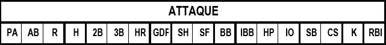

Zone offensive.

| PA |
Nombre de passage au bâton.
|
| AB |
Nombre de ‘At Bat’.
|
| R |
Nombre de points marqués.
|
| H |
Nombre total de Hits. ATTENTION : On compte tous les hits (Simple, double, triple ou Homerun) .
|
| 2B |
Nombre de doubles hits.
|
| 3B |
Nombre de triples hits.
|
| HR |
Nombre de home run .
|
| GDP |
N o mbre frappe au sol ayant générer un double retrait.
|
| SH |
Nombre de sacrifice Hits.
|
| SF |
Nombre de sacrifice flies.
|
| BB |
Nombre de but sur balle.
|
| IBB |
Nombre de but sur balle intentionnel .
|
| HP |
Nombre de ‘Hit By pitch’.
|
| IO |
Nombre d’interférence et d’obstruction.
|
| SB |
Nombre de bases volées.
|
| CS |
Nombre de fois ou coureur s’est fait ret irer sur une tentative de vol de base.
|
| K |
Nombre de ‘Skrike Out’.
|
| RBI |
Nombre de ‘R BI ’. |
NOTE GENERALE : les performances ci-dessus sont notées sur la ligne correspondante au joueur concerné. Par exemple, si un joueur à jouer sur deux positions défensives et qu’il est remplacé par un autre joueur au bâton, les statistiques d’attaque du nouveau joueur seront notées sur la troisième ligne, en face du nom de ce nouveau joueur.